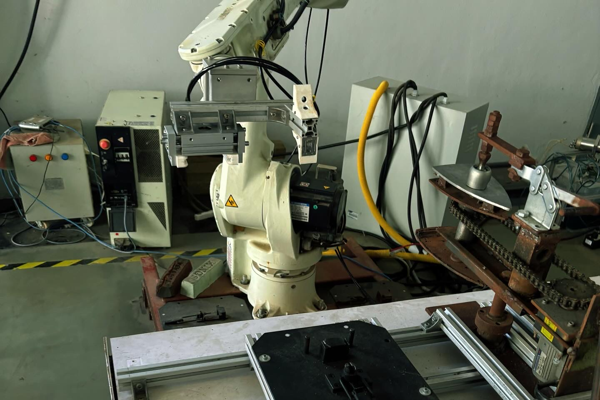
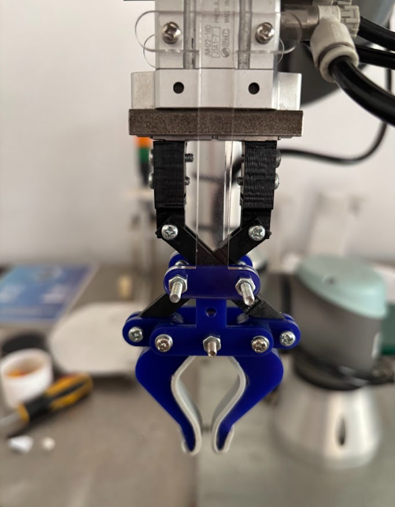
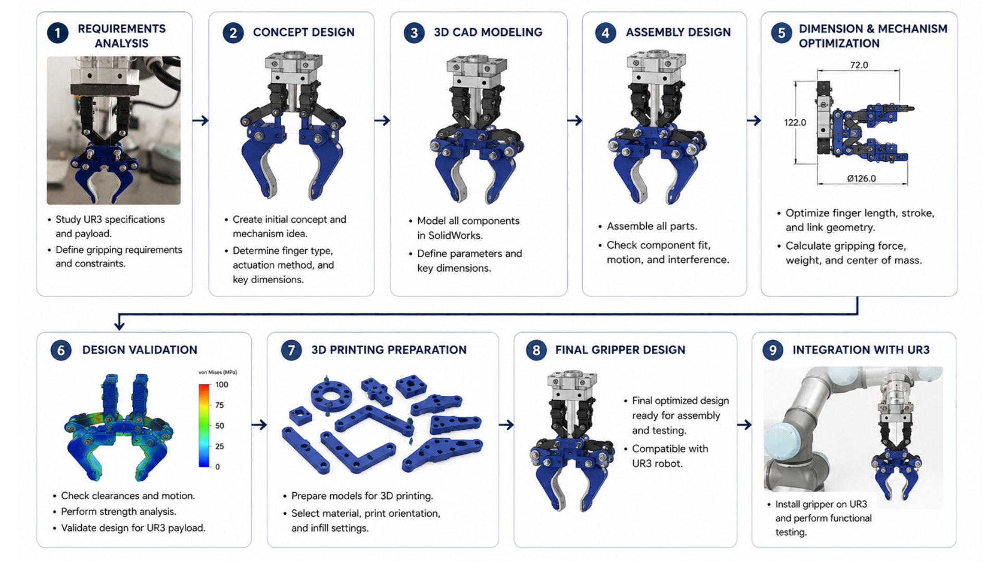

Overview
Designed a custom three-finger robotic gripper for the Universal Robots UR3 collaborative robot. The gripper was optimized for lightweight construction, stable gripping performance, and rapid prototyping using 3D printing technology.
3D-Printed Three-Finger Gripper Design for Universal Robots UR3



Designed a custom three-finger robotic gripper for the Universal Robots UR3 collaborative robot. The gripper was optimized for lightweight construction, stable gripping performance, and rapid prototyping using 3D printing technology.
Developed a two-stage AI pipeline using object detection followed by classification to recognize spacer part numbers automatically.

ศึกษาข้อกำหนดของหุ่นยนต์ UR3 เช่น ความสามารถในการรับน้ำหนัก (Payload), พื้นที่การทำงาน (Workspace), และลักษณะของชิ้นงาน เพื่อกำหนดวัตถุประสงค์ ข้อกำหนด และข้อจำกัดของการออกแบบกริปเปอร์
ออกแบบแนวคิดเบื้องต้นของกริปเปอร์สองนิ้ว กำหนดรูปแบบของกลไกการจับ โครงสร้างโดยรวม และการจัดวางชิ้นส่วน เพื่อให้เหมาะสมกับการใช้งานร่วมกับหุ่นยนต์ UR3
สร้างแบบจำลองสามมิติของชิ้นส่วนทั้งหมดด้วยโปรแกรม SolidWorks โดยใช้เทคนิคการออกแบบเชิงพารามิเตอร์ (Parametric Design) พร้อมกำหนดขนาด มิติ และรายละเอียดของแต่ละชิ้นส่วน
นำชิ้นส่วนทั้งหมดมาประกอบเป็นชุดกริปเปอร์ ตรวจสอบความถูกต้องของการประกอบ ความเข้ากันได้ของชิ้นส่วน รวมถึงการเคลื่อนที่และการชนกันของกลไก
ปรับปรุงขนาด รูปทรงของนิ้วจับ ระยะการเคลื่อนที่ และกลไกการทำงาน พร้อมคำนึงถึงการกระจายน้ำหนัก ความมั่นคงในการจับ และประสิทธิภาพของกริปเปอร์
ตรวจสอบความถูกต้องของแบบ เช่น ระยะห่างระหว่างชิ้นส่วน (Clearance) ความสามารถในการประกอบ การเคลื่อนที่ของกลไก และความเหมาะสมต่อการผลิต เพื่อให้มั่นใจว่าสามารถใช้งานได้จริง
เตรียมไฟล์สำหรับการผลิตด้วยเครื่องพิมพ์สามมิติ โดยกำหนดทิศทางการพิมพ์ เลือกวัสดุที่เหมาะสม และปรับค่าที่เกี่ยวข้องเพื่อให้ได้ชิ้นงานที่มีคุณภาพ
สรุปแบบกริปเปอร์ที่ผ่านการปรับปรุงและตรวจสอบทั้งหมด พร้อมจัดทำแบบวิศวกรรมและไฟล์สำหรับการสร้างต้นแบบ (Prototype)
ติดตั้งกริปเปอร์เข้ากับหุ่นยนต์ Universal Robots UR3 และทดสอบการทำงานจริง เพื่อตรวจสอบความเข้ากันได้ของระบบ ความสามารถในการจับชิ้นงาน และประสิทธิภาพโดยรวม